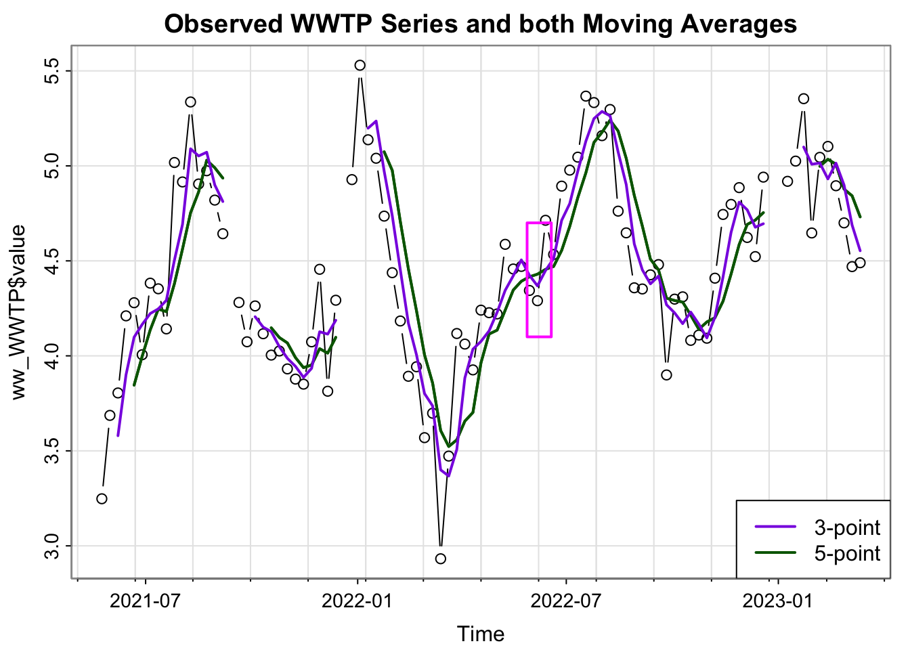

A paper I worked on as a research scientist considered the time series of the concentration (measured as \(\log_{10}\) copies per Liter) of the SARS-CoV-2 virus from 5 different locations in the City of Houston, visualized in parts (c)-(g) of the figure below.
The goal of this study was to see whether the information gleaned from sampling the lift stations, which represent smaller populations, was different than the information gleaned from sampling only the larger wastewater treatment plant. In other words, one research question was to determine whether the WWTP (dark blue) time series has different dynamics (behavior) than those that represent the lift stations.
The methods in this paper are touched on in chapter 8 of our textbook. For this assignment, we will use the wastewater data as an example and practice our plotting and time series data science skills.
(a) The WWTP catchment areas for the City of Houston, with the WWTP of focus shaded. The box shows the extent of (b), the map showing the 4 lift stations considered in the analysis. (c–g) Plot the time series of Log10 Copies/L for the WWTP and the 4 lift station facilities, referred to as Lift Station A–D, with periods of missing values indicated by grey rectangles.
[6 points] Which of the time series has the most missing data? Which appears to have the most variability? Does the overall behavior of the series seem to be similar?
Missing data: The grey rectangles in the plots represent the missing data (per the caption). Lift station B has the most grey rectangles. In fact, it is missing data for almost half the study period, though thankfully not all in one “chunk”.
Variability Note that the time series have different scales on the y-axis that makes it a little difficult to comment on the relative variability of the series. Lift station C and lift station D have the largest range of the y-axis, and the data span that range, so it would be reasonable to say that lift stations C and D have the most variation.
This was not part of the question, but you could compute the variability of each series (ignoring the fact that it is a time series to gain preliminary insight). Indeed, lift station D and C have the highest variability as estimated by standard deviation.
# A tibble: 5 × 2
name sd
<chr> <dbl>
1 Lift station D 0.872
2 Lift station C 0.781
3 Lift station B 0.776
4 WWTP 0.506
5 Lift station A 0.497
Trend: The overall behavior of the series appears similar: the peaks and valleys seem to be aligned across the series, even if the height of the peaks is not exactly the same. We might say these time series have similar temporal structure.
## Import the csv here into r: https://raw.githubusercontent.com/hou-wastewater-epi-org/online_trend_estimation/refs/heads/main/Data/synthetic_ww_time_series.csvww <-read.csv("https://raw.githubusercontent.com/hou-wastewater-epi-org/online_trend_estimation/refs/heads/main/Data/synthetic_ww_time_series.csv", header = T)## verify it workedhead(ww) ## the head() function prints the first 6 rows
dates name value ts_missing colors
1 2021-05-24 Lift station A 3.397031 FALSE #44AA99
2 2021-05-31 Lift station A NA TRUE #44AA99
3 2021-06-07 Lift station A NA TRUE #44AA99
4 2021-06-14 Lift station A NA TRUE #44AA99
5 2021-06-21 Lift station A 4.543146 FALSE #44AA99
6 2021-06-28 Lift station A 4.356128 FALSE #44AA99
[5 points] Inspect the data. Verify that each of the series from the map above are included in the .csv (hint: what are the unique values of the name field?)
unique(ww$name)
[1] "Lift station A" "Lift station B" "Lift station C" "Lift station D"
[5] "WWTP"
This technically answers the question, although if there were some issue with the data then running unique could be missleading– for example, if the .csv was cut off and there was only one observation for one fo the series, unique would return the same results as above. Instead, we can use group_by and summarize to gain more insight into the data for each series.
ww %>%group_by(name) %>%summarise(n =n(), mean =mean(value, na.rm = T), num_missing =sum(ts_missing)) ## i included an indicator for whether a particular observation is missing for convenience.
# A tibble: 5 × 4
name n mean num_missing
<chr> <int> <dbl> <int>
1 Lift station A 95 4.83 28
2 Lift station B 95 4.55 42
3 Lift station C 95 4.57 9
4 Lift station D 95 4.70 18
5 WWTP 95 4.45 4
[5 points ] Convert the date field to a Date format using the function as.Date.
ww$dates <-as.Date(ww$dates)class(ww$dates) ## verify it worked
Telling R a character vector is a date allows us to reformat it using the strptime function by specifying a format argument– see the documentation for strptime for the options. Here I convert to “Month Name day, year” and also just the day of the week. Note that the time series is weekly so that we would expect all the days of the week to be the same (here Monday).
[10 points] Use the tsplot function from the astsa package to plot the WWTP series.
Make sure to use the dates field for the x-axis and specify good axis and plot labels using the xlab/ylab, and main arguments. (see the documentation ?tsplot for more)
library(astsa) tsplot(x = ww_WWTP$dates, y = ww_WWTP$value, "")
[10 points]Apply a moving average filter with 3 time points using the stats::filter function and save the result in a vector called ww_ma_3. You can choose the order of the moving average. (Similar to the final part of problem 1.1, see here in Lecture Notes).
10.[10 points] Plot the moving average you computed on top of the tsplot in a different color using the lines function (see linked Problem 1.1 above). In the call to the lines function, also use type = "l" and lwd = 2.
library(astsa)tsplot(x = ww_WWTP$dates, y = ww_WWTP$value, main ="WWTP Series and Moving Average filter with 3 time points",type ="b", xlab ="Log10 Copies/L")lines(x = ww_WWTP$dates, y = ww_ma_3, lwd =2, col ="blueviolet", type ="l")
[15 points] Apply the moving average filter again, but this time use 5 time points, call it ww_ma_5. Plot just the wastewater series and the ww_ma_5 you just computed, and use a different color for this MA process than you used in question 10.
ww_ma_5 <- stats::filter(ww_WWTP$value, filter =rep(1/5, 5), sides =1)tsplot(x = ww_WWTP$dates, y = ww_WWTP$value, main ="Observed WWTP Series and Moving average smoother with 5 time points",type ="b")lines(x = ww_WWTP$dates, y = ww_ma_5, lwd =2, col ="darkgreen", type ="l")
[5 points]Inspect the plot you generated in questions 10 and 11. Which MA process looks “smoother”?
Since we are just visually inspecting time series, different people may notice different things when looking at the same plot. I would say that the smoother which uses five time points appears smoother: some of the places where the 3-point moving average appears particularly “jagged” is smoother for the 5-point. It’s a but easier to see when you plot them on the same plot.
tsplot(x = ww_WWTP$dates, y = ww_WWTP$value, main ="Observed WWTP Series and both Moving Averages", type ="b")lines(x = ww_WWTP$dates, y = ww_ma_5, lwd =2, col ="darkgreen", type ="l")lines(x = ww_WWTP$dates, y = ww_ma_5, lwd =2, col ="darkgreen", type ="l")lines(x = ww_WWTP$dates, y = ww_ma_3, lwd =2, col ="blueviolet", type ="l")legend("bottomright", legend =c("3-point", "5-point"), col =c("blueviolet","darkgreen"), lwd =2)rect(xleft =19140, xright =19161, ytop =4.7, ybottom =4.1, border ="magenta", lwd =2)

[10 points] Describe the different way that the missing data in the WWTP series impacts the moving average estimates for the case of 3 time points vs. 5 time points.
Consider the right hand side of the missing data period near the beginning of 2022. The 3-point moving average (purple line) is able to “restart” sooner than the 5-point moving average (green line). This is because the 3-point moving average just has to wait until it has 3 points to re-start the estimation, wheras the 5-point must wait for 5 points.
[5 points] Note that the data you used for this activity was “synthetic” wastewater data. Why might a researcher share a synthetic version of their data? What do you think that might mean?
Synthetic data (at least how I use it) are data that are not directly observed, but rather simulated (or sampled) from a model that is fit using real data. In other words, it is made-up data that has similar properties to the real data. Researchers might decide to share synthetic data when they want people to be able to run their code for a paper, but the data are sensitive in nature, for example, have personally identifiable health information. Here, we followed CDC guidelines to not release the real data (or real names of the lift stations and WWTP) when the population served by the facility being sampled is less than 4,000.